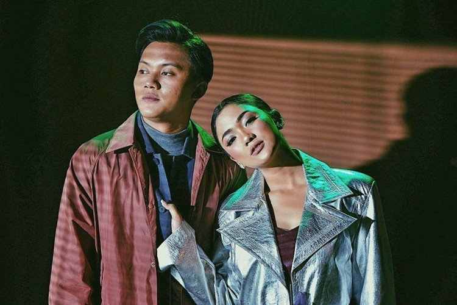

MY Daily Music & Video
Berikut sedikit kilasan tentangPenyanyi Favoritku

SEKILAS BIODATA
Tentang Marion Jola, Mey,30 2022
Marion Rambu Jola Pedi lahir di Kupang, Nusa Tenggara Timur, pada 12 Juni 2000.Marion merupakan anak pertama dari tiga bersaudara. Ayahnya, Ari Umbu, pernah beberapa kali bekerja di instansi pemerintah daerah Nusa Tenggara Timur Ibunya bernama Sherly N. Dauta Elim. Ia mempunyai dua orang adik laki-laki.Marion menempuh pendidikan menengah di SMA Kristen Mercusuar Kupang.
PERJALANAN KARIR
Pada tahun 2017, Marion mengikuti ajang pencarian bakat Indonesian Idol musim kesembilan. Berawal dari audisi daerah di Kupang, Nusa Tenggara Timur ia berhasil dipilih oleh Bambang Reguna Bukit setelah membawakan lagu "That’s What I Like" dari Bruno Mars dan mendapatkan tiket untuk audisi panggung di Jakarta.[6] Saat audisi di Jakarta, Marion membawakan lagu "That’s What I Like" oleh Bruno Mars dan "Siapkah Kau Tuk Jatuh Cinta Lagi" oleh HIVI! dan berhasil meraih golden ticket. Ia dinilai juri memiliki warna suara manja yang khas dan memikat.[7] Pasca lolos dari babak audisi dan mengikuti proses karantina kompetisi, Marion tereliminasi dalam babak enam besar pada 12 Maret 2018.[8]

Marion Jola
Ciri khas suaranya yang unik juga penampilannya yang menarik, membuat ia memiliki banyak penggemar. Artis cantik yang memiliki banyak talenta ini mempunyai penggemar dengan sebutan ‘Lavers’.
Popular Songs
-
.jpg) Rayu
Rayu
Marion & Laleilmanino -
Jangan
Marion & Rayi Putra -

Tak Ingin Pisah Lagi
Marion & Rizky Febian